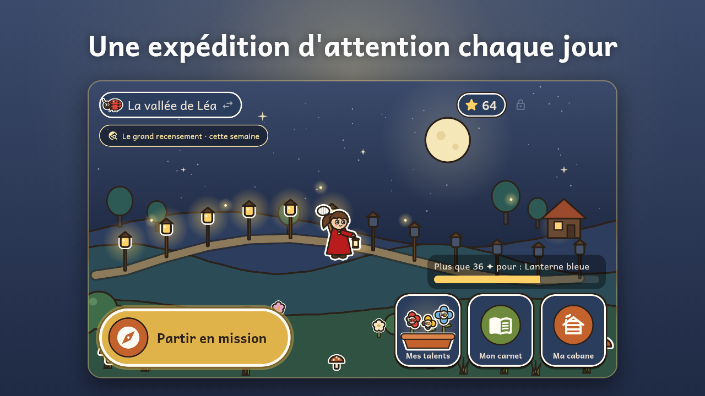
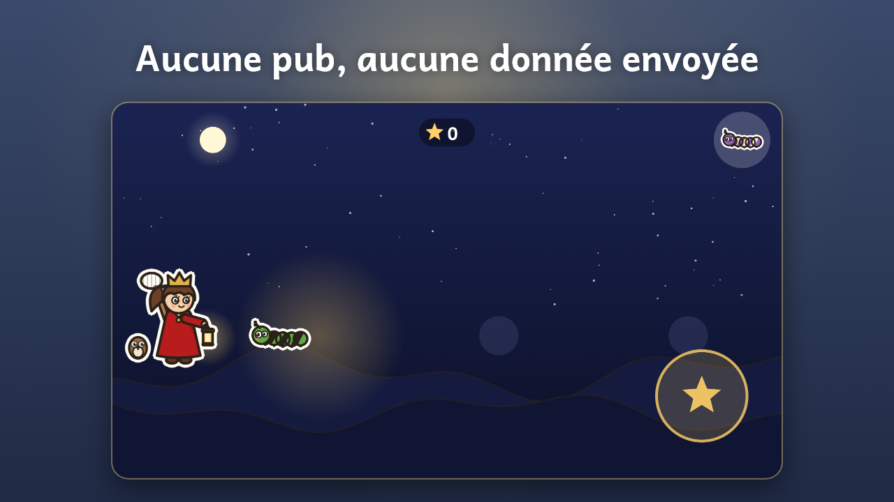
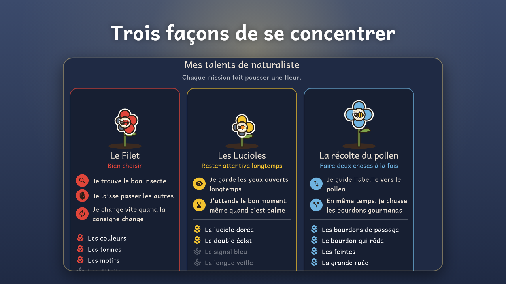
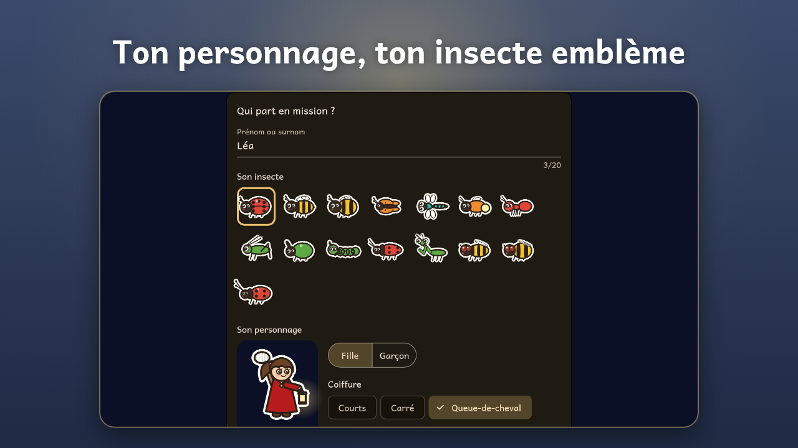
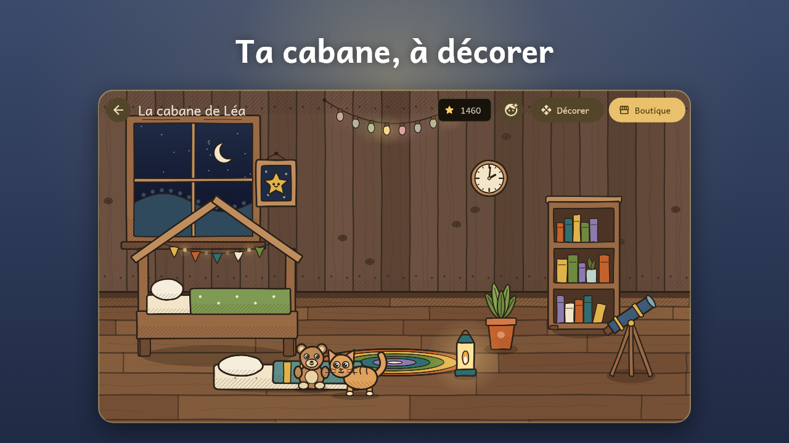
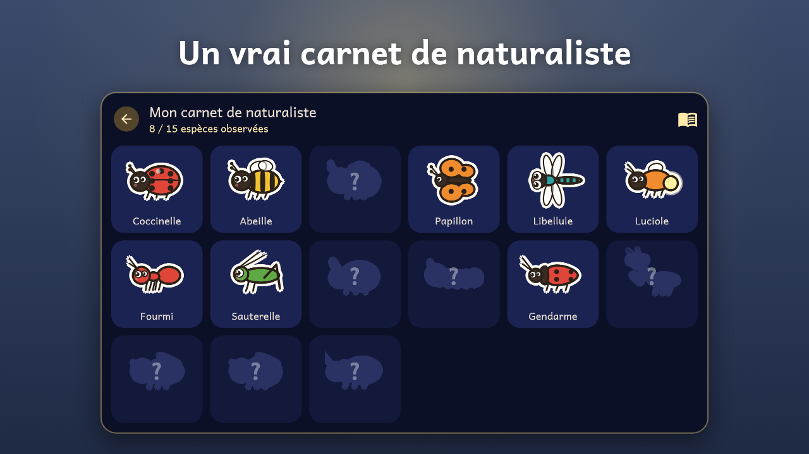
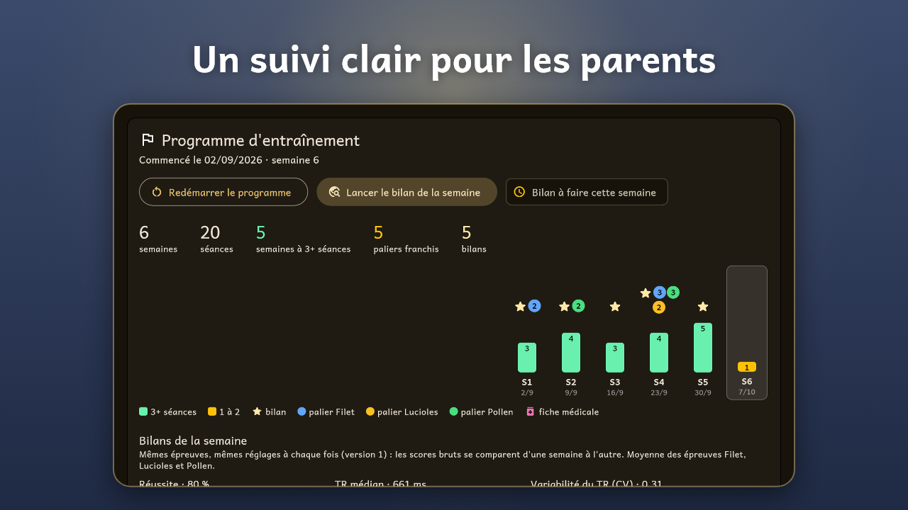

Trois missions, trois façons de se concentrer
🐞 Le Filet
Attraper le bon insecte et laisser passer les autres, même quand la consigne change en cours de route.
Attention sélective, inhibition, flexibilité.
✨ Les Lucioles
Rester attentif dans la nuit pour repérer la rare luciole dorée à son clignotement.
Attention soutenue.
🐝 La récolte du pollen
Guider l'abeille d'une main et chasser le bourdon gourmand de l'autre.
Attention divisée.
En images







Pensé pour les enfants
🎯 Toujours à sa mesure
La difficulté s'ajuste en temps réel. Aucun échec affiché, aucun classement.
🏡 Une cabane à soi
Les points de concentration servent à décorer sa cabane et habiller son personnage. Prix fixes, rien d'aléatoire, rien à acheter.
📖 Un vrai carnet
Chaque insecte observé ajoute une fiche au carnet, avec de vrais faits lus à voix haute. Les insectes sont toujours relâchés.
Pour les parents
⏱️ Séances courtes
8 à 15 minutes, de 1 à 4 par jour selon votre réglage. Jusqu'à 3 profils d'enfants.
📈 Un suivi clair
Programme d'entraînement, bilan de la semaine identique d'une fois sur l'autre, tendances et exports à partager avec un professionnel.
🔒 Vie privée
Aucune publicité, aucun compte, aucune connexion à Internet. Tout reste sur l'appareil. Politique de confidentialité.
TDATRAIN est un jeu d'entraînement de l'attention. Ce n'est pas un dispositif médical : il ne pose aucun diagnostic et ne remplace pas un suivi professionnel.